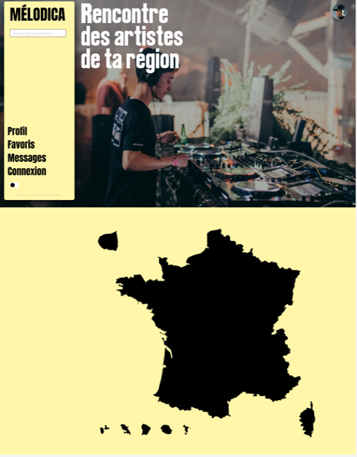

Mes Connaissances
Voici toutes les technologies dont j'ai acquis des connaissances :
Mes projets
Projet Mélodica

C'est le projet présenté au jury pour le titre professionnel DWWM, réalisé durant le mois d'apothéose O'Clock, cette application va permettre d'améliorer la relation entre artistes amateurs (ou non) et organisateurs d'événements. Il est l'aboutissement d'un mois de durs labeurs mais est toujours en cours de développement.
Je m'appelle Jordan et je suis développeur web junior. 😊 Issue de la formation Développeur Web et Web Mobile de l'école de formation O'Clock. 🚀 J'habite dans le Grand-Est, plus particulièrement en Moselle.
Suite à mon passage au titre professionnel DWWM, on m'a convaincu de poursuivre les études. Je suis motivé à apprendre de nouvelles choses, calme, je sais être à l'écoute et j'aime particulièrement aider mes collègues, ce qui a fait de moi un élément central de mon projet au cours du mois d'apothéose O'Clock. N'hésitez pas à me contacter pour toute information complémentaire. 📬
En dehors du développement web, j'apprécie également explorer de nouvelles technologies, travailler sur des projets innovants et élargir continuellement mes compétences. Mon objectif est de contribuer de manière significative à des projets stimulants et de collaborer avec des professionnels passionnés. Si vous avez des questions ou si vous souhaitez en savoir plus sur mon parcours, je suis à votre disposition ! 😊
BTS Télécommunication et réseaux - Année 2015
C'est la partie de ma vie qui m'a initié au code. Hélas arrivé à la moitié de l'année, je n'avais aucun attrait pour les cours et j'ai décidé d'arrêter pour aller travailler.

Eqiom - du 04/12/2017 au 02/07/2023
C'est mon premier CDI, j'y ai travaillé comme ouvrier, m'occupant de gérer une installation de production de sacs de ciment.

O'Clock - du 06/06/2023 au 17/11/2023
C'est l'organisme de formation que j'ai choisi pour la formation développeur web et web mobile. Constituée d'un socle PHP, d'une spécialisation au choix entre REACT et Symfony et un mois de projet. Le passage de mon titre professionnel s'est déroulé le 12 janvier, il y a 6 à 8 semaines d'attente pour les résultats.